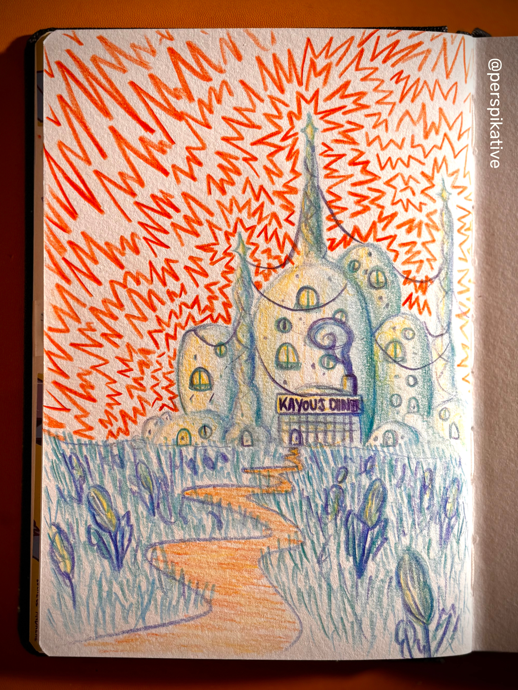

CRÉATIONS

Teintes : Orange, bleu, jaune et violet⌛️ Temps de travail : 1h45
❇️ Particularités : Couleurs flashies
💭 Imagination : 60% réfléchie • 40% improvisée
💬 Commentaires :
Ce petit restaurant dans Kayoupolis..."/>



Teintes : Orange, bleu, jaune et violet